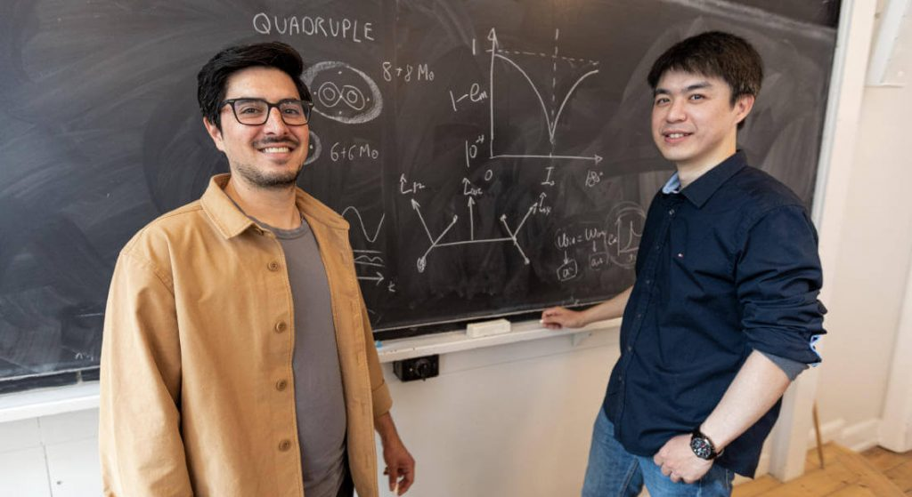

သိပ္ပံ ပညာရှင် များရဲ့ အဆိုအရ အခု ရှာဖွေ တွေ့ရှိ ခဲ့တဲ့ ကြယ်အဖွဲ့အစည်းဟာ ဂလက်ဆီ ထဲမှာ တစ်ကြိမ်တစ်ခါသာ ပေါ်ပေါက်နိုင်တဲ့ အလွန်ရှားပါးတဲ့ အဖွဲ့အစည်း ဖြစ်တယ်လို့ ဆိုပါတယ်။
အခု ကြယ်အဖွဲ့အစည်းကို ဒီန်းမတ်နိုင်ငံ၊ ကိုပင်ဟေဂင် တက္ကသိုလ် (University of Copenhagen)၊ Neils Bohr Institute က သုတေသီ နှစ်ဦးက ရှာဖွေ တွေ့ရှိခဲ့ ကြတာဖြစ်ပါတယ်။
ယခုအခါမှာ သိပ္ပံ ပညာရှင် တွေဟာ ဒီ ကြယ်အဖွဲ့အစည်း ဘယ်လို ဖြစ်ပေါ်လာသလဲ ဆိုတာကို အထူး စိတ်ဝင်တစား သုတေသန ပြုနေ ကြပါတယ်။
အခု ကြယ်စနစ်မှာ ဗဟိုမှာ အချင်းချင်း အပြန်အလှန် လှည့်ပတ်နေတဲ့ ကြယ်အမွှာပူး တစ်စုံ ရှိပါတယ်။ ဒီ ကြယ်အမွှာပူး ကိုမှ နောက်ထပ် ဧရာမ ကြယ်ကြီး တစ်လုံးက အပြင်ကနေ ပတ်နေပါတယ်။

သိပ္ပံ ပညာရှင် တွေဟာ အရင်ကလဲ ကြယ် ၃ လုံးပူး တွေကို တွေ့ခဲ့ ဖူးပါတယ်။ ဒါပေမယ့် အရင် တွေ့ဖူးတဲ့ ကြယ် ၃ မွှာပူး တွေက ဒီကြယ်တွေလောက် မကြီးမားကြ ပါဘူး။ ပြီးတော့ အခု ကြယ် ၃ မွှာပူးမှာ ပါဝင်တဲ့ ဧရာမ ကြယ်ကြီးတွေ ကလဲ တခုနဲ့ တခု အရမ်းကို နီးနီးကပ်ကပ် လှည့်ပတ်နေကြတာ ဖြစ်ပါတယ်။
ဒီ ၃ မွှာပူးရဲ့ အလယ်ဗဟိုက ကြယ် စုံတွဲဟာ အချင်းချင်း တစ်ပတ် ပတ်မိဖို့ အချိန် ၁ ရက်ပဲ ကြာပါတယ်။ ဆိုလိုတာက သူတို့ စုံတွဲ တစ်ပတ် ပတ်ဖို့ ကြာချိန်ဟာ ကမ္ဘာ တစ်ပတ် ပတ်ဖို့ ကြာချိန်နဲ့ အတူတူပဲ ဖြစ်ပါတယ်။
ဒီ ဗဟိုက ကြယ် စုံတွဲရဲ့ စုစုပေါင်း ဒြပ်ထုဟာ နေရဲ့ ဒြပ်ထုရဲ့ ၁၂ ဆတောင် ရှိပါတယ်။ အကြမ်းဖျင်း ဆိုရရင် ဒီ ကြယ်စုံတွဲမှာ ပါတဲ့ ကြယ်တစ်စင်း စီကတင် နေ ရဲ့ ဒြပ်ထု ၆ ဆ ရှိနေပါတယ်။
ဒီ ကြယ်စုံတွဲကို အပြင်က ပတ်နေတဲ့ ကြယ်က ဒီ့ထက်တောင်မှ ပိုကြီး ပါသေးတယ်။ ဒီ တတိယ ကြယ်ကြီးဟာ နေ ၁၆ စင်းစာ ဒြပ်ထု ရှိပါတယ်။
စိတ်ဝင်စားဖွယ် ဗီဒီယို
ဒီ ကြယ် ၃ မွှာပူးဟာ အလွန် အလင်းရောင် တောက်ပပါတယ်။ ဒါ့ကြောင့် သူ့ကို တွေ့စက ဗဟိုက ကြယ် နှစ်စင်း ရှိမှန်း မသိခဲ့ ကြပဲ ဗဟိုမှာ ကြယ်တစ်စင်းနဲ့ ပတ်နေတဲ့ ကြယ်တစင်းပဲ ရှိတယ်လို့ ထင်ခဲ့ ကြပါတယ်။
ဗဟိုက ကြယ်စုံတွဲကို ရှာဖွေ တွေ့ရှိ ပုံကလဲအတော်လေး ထူးဆန်းပါတယ်။ ဘာ့ကြောင့်ဆို ဒီလို ရှာဖွေ တွေ့ရှိ ခဲ့သူတွေဟာ အပျော်တမ်း နက္ခတ် ဝါသနာရှင်တွေ ဖြစ်နေလို့ပါ။
နာဆာရဲ့ TESS observatory (Transiting Exoplanet Survey Satellite) ကနေ ဖမ်းယူ ရရှိတဲ့ အချက်အလက် တွေကို အပျော်တမ်း နက္ခတ် ပညာရှင် တွေက စူးစမ်း လေ့လာ ခဲ့ကြပါတယ်။ ဒီလို လေ့လာခဲ့ ကြသူတွေဟာ ပုံမှန်မဟုတ်တဲ့ အချက်တချက်ကို သွားပြီး သတိပြုမိ ခဲ့ကြပါတယ်။
ဒီ အချက်ကို အပျော်တမ်း နက္ခတ် ဝါသနာ ရှင်တွေက ထောက်ပြကြတဲ့ အခါမှ နက္ခတ် ပညာရှင် တွေဟာ ဒီ ကြယ်စုံတွဲကို အသေးစိတ် လေ့လာခဲ့ကြတာ ဖြစ်ပါတယ်။ ဒီလို လေ့လာတဲ့ အခါကျမှ အရင်က ကြယ်တလုံးထဲလို့ ထင်ခဲ့ကြတဲ့ ဗဟိုမှာ ကြယ်နှစ်လုံးတွဲ ဖြစ်နေတာကို ရှာဖွေ တွေ့ရှိ ခဲ့ကြတာ ဖြစ်ပါတယ်။
ဒီ ကြယ် ၃ လုံးတွဲ အဖွဲ့အစည်း ဘယ်လို ဖြစ်လာလဲ ဆိုတာကိုတော့ ပညာရှင်တွေ အဖြေရှာဖို့ ကြိုးစားခဲ့ ကြပါတယ်။ သူတို့က ဖြစ်နိုင်ခြေ ၃ ခုကို တင်ပြလာ ကြပါတယ်။ ဒါတွေကတော့
(၁) အပြင်က တတိယ ကြယ် အရင် ဖြစ်ပြီးမှ အတွင်းက ကြယ်စုံတွဲ ဖြစ်လာတယ်
(၂) အတွင်းက ကြယ်စုံတွဲ နဲ့ တတိယ ကြယ်တို့ဟာ သီးခြားစီ မွေးဖွား ခဲ့ကြတယ်။ ပြီးတော့မှ ဆွဲငင်အားကြောင့် ဒီလို အခြေအနေကို ရောက်လာတယ်
(၃) အပြင်က တတိယ ကြယ်ဟာ မူလက အတွင်းက ကြယ်စုံတွဲ လိုပဲ ၂ မွှာပူး ကြယ်စုံတွဲ ဖြစ်တယ်။ နောက်မှ ဒီကြယ် နှစ်စင်း ပေါင်းသွားကြီး ဧရာမ ကြယ်ကြီး အဖြစ် ပြောင်းလဲသွားတယ်။
ဒီ အဖြေကို ရဖို့ နက္ခတ် ပညာရှင် တွေဟာ ကွန်ပြူတာထဲ အချက်အလက်တွေ ထည့်သွင်းပြီး တွက်ချက်ကြည့် ခဲ့ကြပါတယ်။ သူတို့ဟာ စုစုပေါင်း အကြိမ် ၁၀၀,၀၀၀ လောက် ထပ်ခါ ထပ်ခါ တွက်ချက်ပြီး တဲ့နောက် အဖြစ်နိုင်ဆုံး အဖြေကို ဖော်ထုတ်ဖို့ ကြိုးစား ခဲ့ ပါတယ်။
ဒီ ကွန်ပြူတာ တွက်ချက်မှု အရ အဖြစ်နိုင်ဆုံးသည် အချက် (၃) ဖြစ်တယ်လို့ ဆိုပါတယ်။ ဆိုလိုတာက ကြယ်စုံတွဲ နှစ်တွဲ အရင် ဖြစ်လာပြီး အပြင်က ကြယ်စုံတွဲဟာ အချင်းချင်း ပေါင်းသွားပြီး ဧရာမ ကြယ်ကြီး ဖြစ်လာပါတယ်။
အတွင်း ကြယ်စုံတွဲ ကတော့ အချင်းချင်း ပေါင်းမိခြင်း မရှိပဲ ယခုထက်တိုင် ကြယ်စုံတွဲ အဖြစ် ဆက်လက် ပြီး တစ်ခုကို တစ်ခု လှည့်ပတ် နေကြပါတယ်။
ဒီ ကြယ်အဖွဲ့အစည်းကို ရှာဖွေ တွေ့ရှိတဲ့ ပညာရှင်တွေ ကတော့ ဒီလို ကွန်ပြူတာ တွက်ချက်မှုဟာ ဒီကြယ် အဖွဲ့အစည်း ဖြစ်ပုံလာပုံနဲ့ ပတ်သက်ပြီး အပြီးသတ် ပြောဖို့ လုံလောက်မှု မရှိဘူးလို့ ဝန်ခံပါတယ်။ သေချာပေါက် ပြောနိုင်ဖို့ ဆိုရင် ဒီ ကြယ်အဖွဲ့အစည်းကို ဒီ့ထက် ပိုပြီး အသေးစိတ် လေ့လာဖို့ လိုမယ်လို့ သူတို့က ထောက်ပြ ကြပါတယ်။
“ကျွန်တော်တို့ အနေနဲ့ ဒီ နယ်ပယ်မှာ ကျွမ်းကျင်တဲ့ နက္ခတ်ပညာရှင် တွေရဲ့ အကူအညီ လိုပါတယ်။ ကျွန်တော်တို့်မှာ ဒီကြယ် အဖွဲ့အစည်းနဲ့ ပါတ်သက်တဲ့ အချက်အလက်တွေ အတိုင်းအတာ တခုထိ စုဆောင်းထားပြီး ဖြစ်ပါတယ်။ ဒါပေမယ့် အခုထက်ထိ ဒီ အချက်အလက် တွေကို အသေးစိတ် မလေ့လာရ သေးပါဘူး။ နောက်ပြီး ဒီ အချက်အလက် တွေကို အသေးစိတ် ခွဲခြမ်းစိတ်ဖြာပြီး ကောက်ချက်ဆွဲတဲ့ အခါ ကျွန်တော်တို့ ကောက်ချက်က မှန်မမှန် ဆိုတာကိုလဲ ဆန်းစစ်ပေးဖို့ အခြား နက္ခတ် ပညာရှင် တွေရဲ့ အကူအညီ လိုအပ်နေပါတယ်” လို့ အလက်ဂျန်ဒရို က ရှင်းပြပါတယ်။
သူတို့က နက္ခတ်ပညာရှင် တွေကို အခြား ကြယ်အဖွဲ့အစည်း တွေနဲ့ ပတ်သက်တဲ့ အချက်အလက် တွေကိုလဲ အသေးစိတ် သုတေသန ပြုကြဖို့ အကြံ ပြုပါတယ်။ အခြား ကြယ်အဖွဲ့အစည်း တွေမှာလဲ ဒီလို ထူးဆန်းတဲ့ ဖွဲ့စည်းပုံ မျိုးတွေ ရှိနေနိုင်တယ်လို့ သူတို့က ထောက်ပြ ကြပါတယ်။
လက်ရှိမှာ ရှာဖွေ တွေ့ရှိတဲ့ သုတေသီ တွေဟာ ဒီ နယ်ပယ်နဲ့ ပါတ်သက်ပြီး ကျွမ်းကျင်တဲ့ ပညာရှင် အချို့နဲ့ ပူးပေါင်းပြီး ဒီဂြိုဟ်ကို အသေးစိတ် လေ့လာဖို့ ကြိုးစား နေကြပါတယ်။ အထူးသဖြင့် အခုထက် ပိုမို ကြီးမားတဲ့ တယ်လီစကုပ်ကြီးတွေနဲ့ အသေးစိတ် လေ့လာနိုင်ဖို့ ရည်ရွယ် ထားကြပါတယ်။
Ref: “One of a Kind” Massive Triple Star System Detected | SciTech Daily